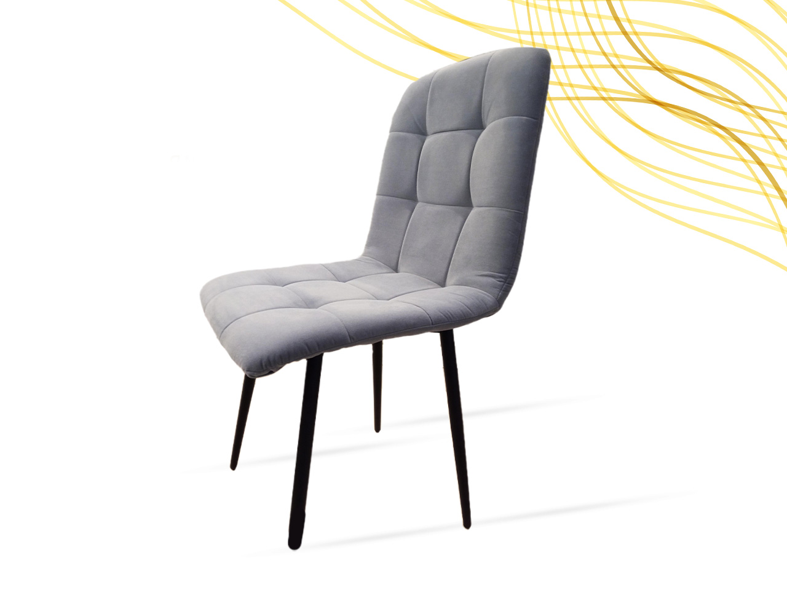
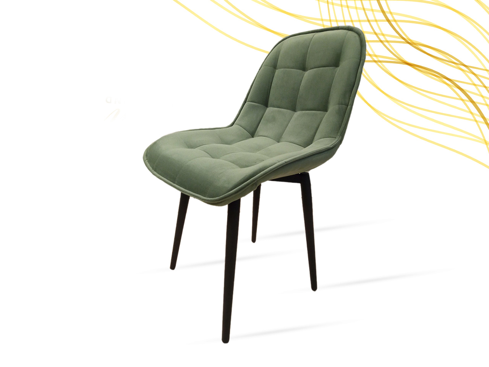
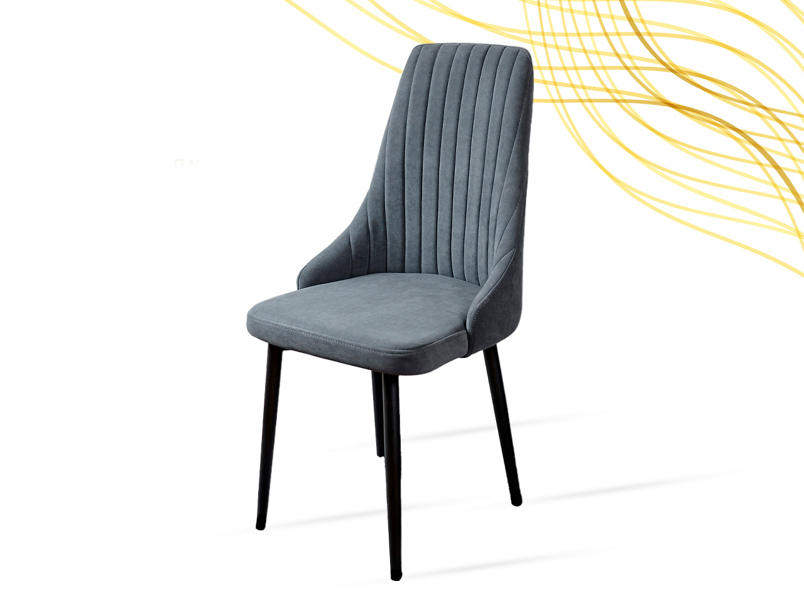
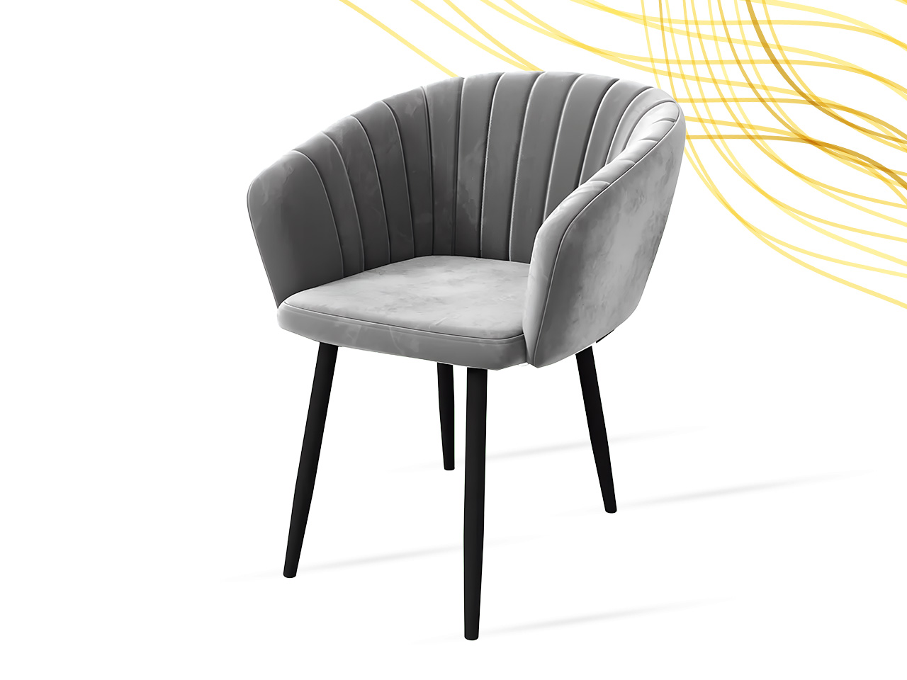
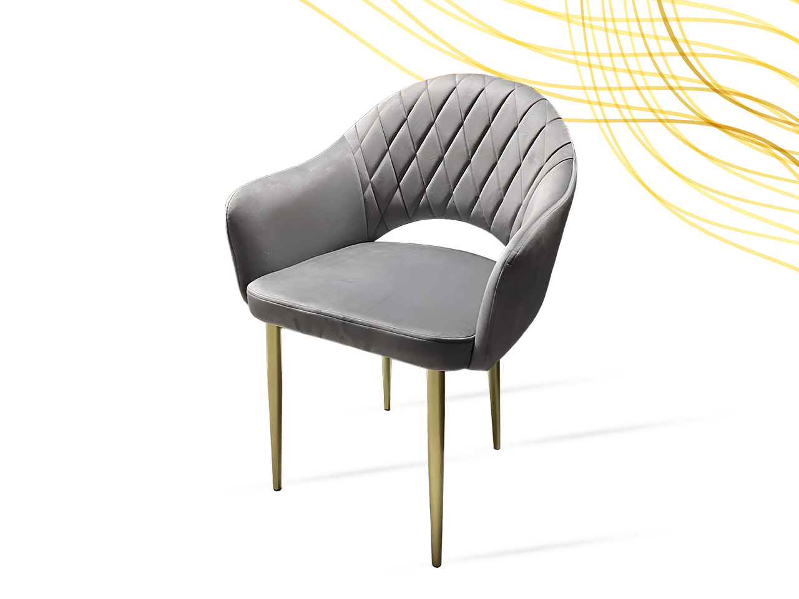
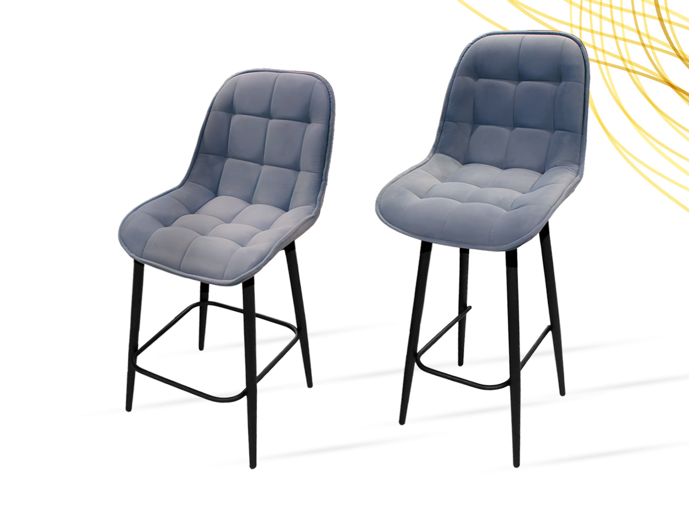
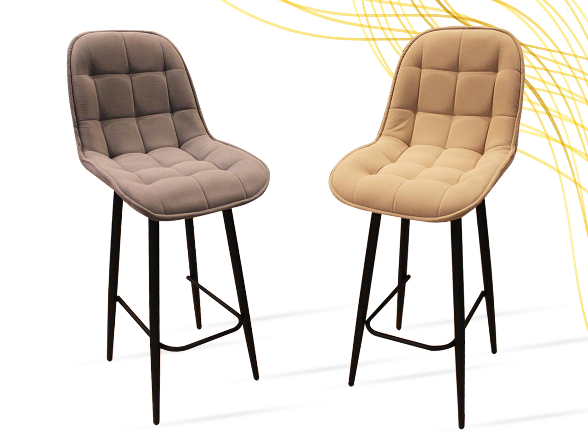
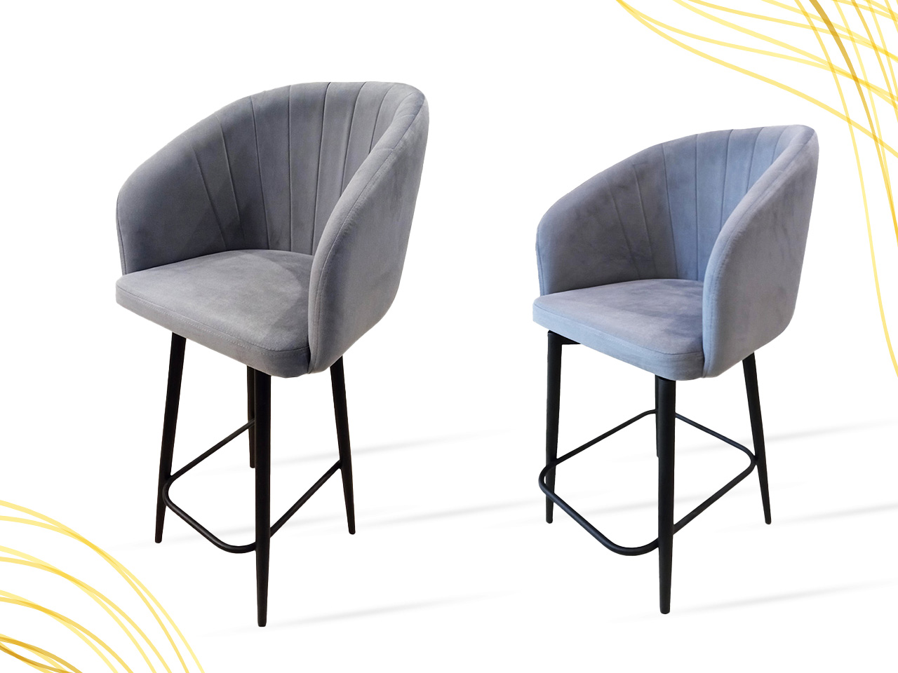

СТУЛЬЯ
Эргономичные стулья для комфортной работы и отдыха

Стул ФРЕД
12 990 ₽

Стул РУМБА
13 990 ₽

Стул КОРА
14 990 ₽

Стул-кресло ВЕРСАЛЬ
19 990 ₽

Стул-кресло СОФИЯ
18 990 ₽

СТУЛЬЯ БАРНЫЕ, ПОЛУБАРНЫЕ
15 990 ₽

СТУЛЬЯ ПОВОРОТНЫЕ
16 990 ₽

СТУЛ-КРЕСЛО БАРНЫЙ, ПОЛУБАРНЫЙ
20 990 ₽